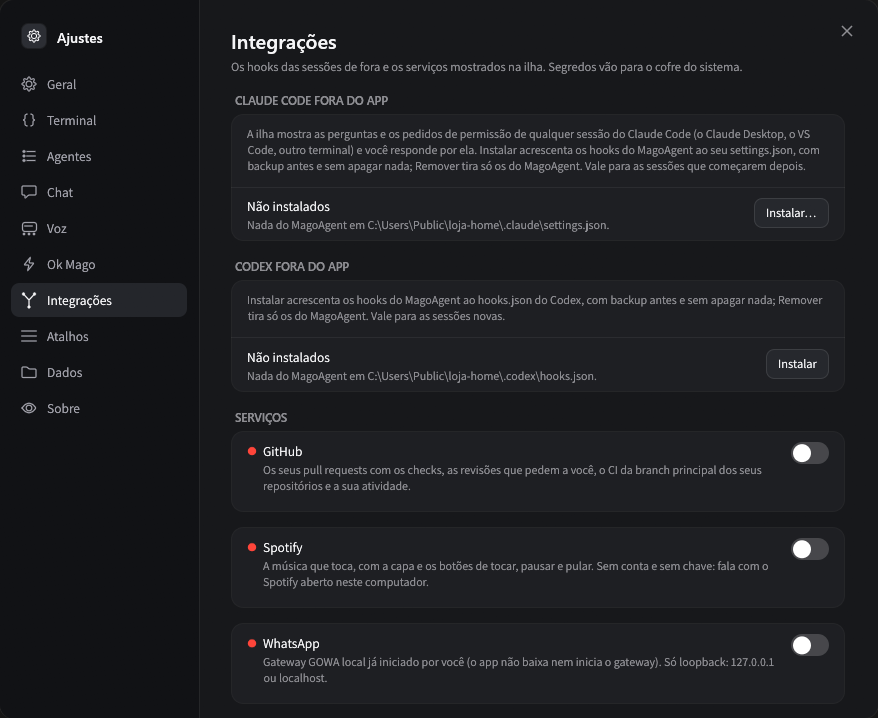

Passe o mouse
Ele sobe e a borda acende.
Tudo o que o site usa, tirado do app: as cores e o vidro de src/app/ui/mod.rs, a ilha de src/app/island/ e a Luna de src/app/mascot/mago/.
Um CSS só (estilo.css) e um JS só (mago.js). Cada item abaixo é uma demonstração ao vivo com o trecho para reutilizar. Escuro por padrão, claro pelo sistema ou pelo botão lá em cima.
Os tokens mudam com o tema: escuro do app (CANVAS_DARK, UiColors::new(true)) e claro (UiColors::new(false)). O destaque é o de glass_accent. A ilha e as cores de agente são as mesmas nos dois.
--fundo--painel--superficie--superficie-alta--selecionado--texto--suave--apagado--destaque--perigo--aviso--ok--ilha--ilha-cartao--luna--claude--codex--verde--amarelo--azul--rosa--spotify--github--whatsapp--notaAssistant na interface (a fonte do app, ASSISTANT_FONT) e Excalifont à mão (HAND_FACE), só em títulos, números e notas.
Lead em Assistant, 1,2rem, cor suave.
Texto de introdução, até 62 caracteres por linha.
<div>
<span class="selo">Selo</span>
<h1 class="titulo">Título à <span class="sublinha">mão<svg viewBox="0 0 200 20" preserveAspectRatio="none" aria-hidden="true"><path d="M3 13c40-8 90-10 194-4" fill="none" stroke="#0a84ff" stroke-width="5" stroke-linecap="round"/></svg></span></h1>
<h2>Seção em Excalifont</h2>
<p class="lead">Lead em Assistant, 1,2rem, cor suave.</p>
<p class="intro">Texto de introdução, até 62 caracteres por linha.</p>
</div>.mao{font-family:var(--mao);font-weight:400}
.titulo{font:clamp(2.4rem,6.4vw,4.3rem)/1.04 var(--mao);margin:0 0 var(--e4);letter-spacing:-.01em}
h2,.h2{font:clamp(1.9rem,4.2vw,2.7rem)/1.12 var(--mao);margin:0 0 var(--e2)}
.lead{font-size:1.2rem;color:var(--suave);max-width:38ch;margin:0 0 var(--e5)}
.intro{max-width:62ch;color:var(--suave);margin:0 0 var(--e6)}
.selo{display:inline-block;font:600 .8rem var(--interface);letter-spacing:.06em;text-transform:uppercase;color:var(--destaque);margin-bottom:var(--e3)}
.sublinha{position:relative;white-space:nowrap}
.sublinha svg{position:absolute;left:-2%;bottom:-.18em;width:104%;height:.4em;overflow:visible}
.sublinha path{stroke-dasharray:220;stroke-dashoffset:220;animation:traco 1.1s .4s var(--suave-saida) forwards}
@keyframes traco{to{stroke-dashoffset:0}}Base de 4 px. Raios: botão 12, cartão 18, chip 8, pílula inteira. Duas curvas: --mola (a ilha abrindo) e --suave-saida (o resto).
<div class="escala">
<span><i style="--t:4px"></i>--e1</span><span><i style="--t:8px"></i>--e2</span><span><i style="--t:12px"></i>--e3</span><span><i style="--t:16px"></i>--e4</span>
<span><i style="--t:24px"></i>--e5</span><span><i style="--t:32px"></i>--e6</span><span><i style="--t:48px"></i>--e7</span><span><i style="--t:72px"></i>--e8</span>
</div>:root{
color-scheme:dark;
--fundo:#1e1e1e;--painel:#242424;--superficie:#303033;--superficie-alta:#3c3c40;--selecionado:#1c3d66;
--texto:#f5f5f7;--texto-2:#e3e3e8;--suave:#a1a1a6;--apagado:#7a7a7a;
--destaque:#0a84ff;--destaque-texto:#fff;--perigo:#f85149;--aviso:#f0a020;--ok:#30d158;
--ponto:rgba(255,255,255,.075);--borda:rgba(255,255,255,.14);--borda-fraca:rgba(255,255,255,.08);
--codigo:#161617;--nota:#fff3bf;--nota-texto:#3a2f05;
--vidro-rgb:44,44,46;
--vidro:linear-gradient(180deg,rgba(var(--vidro-rgb),.96) 0%,rgba(var(--vidro-rgb),.9) 48%,rgba(var(--vidro-rgb),.74) 76%,rgba(var(--vidro-rgb),.42) 100%);
--vidro-forte:rgba(var(--vidro-rgb),.78);
--vidro-sombra:none;
--sombra:0 14px 40px rgba(0,0,0,.35);
--ilha:#000;--ilha-texto:#f5f6f8;--ilha-suave:#8e939c;--ilha-cartao:#141518;--ilha-plano:#0e0f11;--ilha-aba:#1d1f23;
--luna:#38bdf8;--olho:#17142b;--olho-mini:#10131a;
--claude:#d97757;--codex:#2dd4bf;--verde:#22c55e;--amarelo:#eab308;--azul:#60a5fa;--rosa:#e879f9;
--spotify:#1ed760;--github:#f4505e;--whatsapp:#25d366;
--mao:Excalifont,"Comic Sans MS",cursive;
--interface:Assistant,system-ui,-apple-system,"Segoe UI",Roboto,sans-serif;
--mono:ui-monospace,SFMono-Regular,Menlo,Consolas,monospace;
--e1:4px;--e2:8px;--e3:12px;--e4:16px;--e5:24px;--e6:32px;--e7:48px;--e8:72px;
--r-botao:12px;--r-cartao:18px;--r-pilula:999px;--r-chip:8px;
--mola:cubic-bezier(.34,1.56,.64,1);--suave-saida:cubic-bezier(.22,1,.36,1);
}
:root[data-tema=claro]{
color-scheme:light;
--fundo:#f7f7f8;--painel:#fff;--superficie:#ececee;--superficie-alta:#f2f2f5;--selecionado:#d6e8ff;
--texto:#1d1d1f;--texto-2:#1b1b1f;--suave:#5c5c63;--apagado:#999;
--destaque:#007aff;--perigo:#c92a2a;--aviso:#906420;--ok:#1f8a3b;
--ponto:rgba(0,0,0,.11);--borda:rgba(0,0,0,.08);--borda-fraca:rgba(0,0,0,.06);--codigo:#efeff1;
--vidro-rgb:255,255,255;--vidro-sombra:0 1px 2px rgba(0,0,0,.1),0 6px 20px rgba(0,0,0,.08);--sombra:0 12px 34px rgba(20,20,40,.1)
}O quadro de pontos é o fundo de toda página (no body), a cada 22 px. O .brilho põe um halo do destaque atrás de um bloco, como no herói.
<div class="brilho"><span class="bilhete">o quadro de pontos, com brilho atrás</span></div>body{margin:0;color:var(--texto);font:17px/1.55 var(--interface);overflow-x:hidden;
background:var(--fundo) radial-gradient(var(--ponto) 1.2px,transparent 1.4px) 0 0/22px 22px}
.brilho{position:relative}
.brilho::before{content:"";position:absolute;inset:-10% 0 auto;height:420px;z-index:-1;pointer-events:none;
background:radial-gradient(closest-side,color-mix(in srgb,var(--destaque) 22%,transparent),transparent)}O paint_glass do app: um fio de luz em volta e o preenchimento sumindo para baixo (96%, 90%, 74%, 42%). O forte é 78% por igual. No claro, uma sombra leve o destaca do branco. Aqui com desfoque, que o app não tem.
<div class="barra-vidro vidro">
<button class="botao-vidro" type="button" aria-pressed="true" aria-label="Selecionar"><svg aria-hidden="true"><use href="#i-lapis"/></svg></button>
<button class="botao-vidro" type="button" aria-label="Chat"><svg aria-hidden="true"><use href="#i-chat"/></svg></button>
<button class="botao-vidro" type="button" aria-label="Pasta"><svg aria-hidden="true"><use href="#i-pasta"/></svg></button>
<button class="botao-vidro" type="button" aria-label="Navegador"><svg aria-hidden="true"><use href="#i-globo"/></svg></button>
</div>.vidro{background:var(--vidro);border:1px solid var(--borda);box-shadow:var(--vidro-sombra);
-webkit-backdrop-filter:blur(18px) saturate(1.4);backdrop-filter:blur(18px) saturate(1.4)}
.barra-vidro{display:inline-flex;gap:5px;padding:5px 6.5px;border-radius:var(--r-pilula)}
.botao-vidro{width:30px;height:30px;border-radius:50%;border:0;background:transparent;color:var(--texto);display:grid;place-items:center;cursor:pointer}
.botao-vidro:hover{background:color-mix(in srgb,var(--texto) 10%,transparent)}
.botao-vidro[aria-pressed=true]{color:var(--destaque)}
.botao-vidro svg{width:17px;height:17px}<div class="botoes">
<a class="botao" href="#botoes">Principal</a>
<a class="botao sec" href="#botoes">Secundário</a>
<a class="botao pequeno" href="#botoes"><svg width="16" height="16" aria-hidden="true"><use href="#i-baixar"/></svg>Pequeno</a>
</div>.botao{display:inline-flex;align-items:center;justify-content:center;gap:8px;background:var(--destaque);color:var(--destaque-texto);text-decoration:none;
font:600 1rem var(--interface);padding:11px 20px;border-radius:var(--r-botao);border:0;cursor:pointer;
box-shadow:0 6px 18px color-mix(in srgb,var(--destaque) 30%,transparent);transition:transform .15s,filter .15s}
.botao:hover{transform:translateY(-1px);filter:brightness(1.08)}
.botao.sec{background:var(--vidro-forte);color:var(--texto);border:1px solid var(--borda);box-shadow:none}
.botao.pequeno{padding:7px 14px;font-size:.92rem;border-radius:10px}
.botoes{display:flex;flex-wrap:wrap;gap:10px}
.botao-vidro{width:30px;height:30px;border-radius:50%;border:0;background:transparent;color:var(--texto);display:grid;place-items:center;cursor:pointer}
.botao-vidro:hover{background:color-mix(in srgb,var(--texto) 10%,transparent)}
.botao-vidro[aria-pressed=true]{color:var(--destaque)}
.botao-vidro svg{width:17px;height:17px}Os badges são os do canto das pílulas da ilha: âmbar “!” para pergunta ou permissão, verde ✓ para turno que acabou, vermelho ✕ para erro.
<ul class="chips"><li class="chip">get_scene</li><li class="chip">ask_agent</li></ul>
<span class="etiqueta">Última versão</span>
<i class="badge pergunta">!</i> <i class="badge feito">✓</i> <i class="badge erro">✕</i>
<span class="ponto-estado"></span> <span class="ponto-estado cor-amarelo"></span>.chip{display:inline-flex;align-items:center;gap:6px;font:.85rem var(--mono);padding:4px 9px;border-radius:var(--r-chip);background:var(--codigo);border:1px solid var(--borda-fraca);color:var(--texto-2)}
.chips{display:flex;flex-wrap:wrap;gap:8px;margin:0;padding:0;list-style:none}
.etiqueta{font:600 .75rem var(--interface);text-transform:uppercase;letter-spacing:.05em;padding:3px 9px;border-radius:var(--r-pilula);background:var(--destaque);color:var(--destaque-texto)}
.badge{display:inline-grid;place-items:center;width:18px;height:18px;border-radius:50%;font:700 11px/1 var(--interface);color:#17142b}
.badge.pergunta{background:#f5a524}
.badge.feito{background:var(--ok);color:#fff}
.badge.erro{background:#f4505e;color:#fff}
.ponto-estado{width:8px;height:8px;border-radius:50%;background:var(--cor,var(--ok));display:inline-block;flex:none}Setas do teclado trocam de aba; com data-sistema ela abre no sistema de quem visita.
<div>
<div class="abas" role="tablist" aria-label="Exemplo">
<button role="tab" id="ex-aba-a" data-sistema="windows" aria-controls="ex-a" aria-selected="true">Windows</button>
<button role="tab" id="ex-aba-b" data-sistema="linux" aria-controls="ex-b" aria-selected="false" tabindex="-1">Linux</button>
</div>
<div class="painel" id="ex-a" role="tabpanel" aria-labelledby="ex-aba-a">Painel do Windows.</div>
<div class="painel" id="ex-b" role="tabpanel" aria-labelledby="ex-aba-b" hidden>Painel do Linux.</div>
</div>.abas{display:flex;gap:6px;padding:4px;border-radius:var(--r-botao);background:var(--codigo);width:max-content;max-width:100%;margin-bottom:var(--e4);overflow-x:auto}
.abas button{font:600 .98rem var(--interface);border:0;background:transparent;color:var(--suave);padding:8px 16px;border-radius:9px;cursor:pointer;white-space:nowrap}
.abas button[aria-selected=true]{background:var(--superficie);color:var(--texto);box-shadow:0 2px 8px rgba(0,0,0,.14)}
.painel h3{margin-top:18px}
.painel h3:first-child{margin-top:0}
.painel[hidden]{display:none}claude mcp add magoagent -- /usr/bin/magoagent mcp<div class="comando"><pre><code>claude mcp add magoagent -- /usr/bin/magoagent mcp</code></pre><button class="copiar" type="button">Copiar</button></div>.comando{position:relative;margin:0 0 14px}
.comando pre{margin:0;background:var(--codigo);border:1px solid var(--borda-fraca);border-radius:12px;padding:14px 92px 14px 14px;overflow-x:auto;font-size:.84rem;line-height:1.6;color:var(--texto-2)}
.copiar{position:absolute;top:8px;right:8px;font:600 .8rem var(--interface);padding:6px 10px;border-radius:8px;border:1px solid var(--borda);background:var(--superficie);color:var(--texto);cursor:pointer}Cartão de vidro forte; com .flutua ele sobe 3 px e acende a borda no destaque. O ícone pega a cor de --cor.
Ele sobe e a borda acende.
O ícone na cor da integração.
<div class="grade-2">
<article class="cartao flutua"><div class="icone"><svg aria-hidden="true"><use href="#i-terminal"/></svg></div><h3>Passe o mouse</h3><p>Ele sobe e a borda acende.</p></article>
<article class="cartao flutua cor-spotify"><div class="icone"><svg aria-hidden="true"><use href="#i-nota"/></svg></div><h3>Com cor</h3><p>O ícone na cor da integração.</p></article>
</div>.cor-luna{--cor:var(--luna)}
.cor-claude{--cor:var(--claude)}
.cor-codex{--cor:var(--codex)}
.cor-verde{--cor:var(--verde)}
.cor-amarelo{--cor:var(--amarelo)}
.cor-azul{--cor:var(--azul)}
.cor-rosa{--cor:var(--rosa)}
.cor-spotify{--cor:var(--spotify)}
.cor-github{--cor:var(--github)}
.cor-whatsapp{--cor:var(--whatsapp)}
.cor-apagado{--cor:var(--apagado)}
.cartao{background:var(--vidro-forte);border:1px solid var(--borda);border-radius:var(--r-cartao);box-shadow:var(--vidro-sombra);padding:20px;
-webkit-backdrop-filter:blur(14px);backdrop-filter:blur(14px);transition:transform .25s var(--suave-saida),border-color .25s,box-shadow .25s}
.cartao p{margin:0;color:var(--suave)}
.cartao.flutua:hover{transform:translateY(-3px);border-color:color-mix(in srgb,var(--destaque) 55%,var(--borda));box-shadow:var(--sombra)}
.icone{width:38px;height:38px;border-radius:11px;display:grid;place-items:center;background:color-mix(in srgb,var(--cor,var(--destaque)) 16%,transparent);color:var(--cor,var(--destaque));margin-bottom:var(--e3)}
.icone svg{width:22px;height:22px}
<figure class="print vidro"><img src="img/integracoes.png" width="878" height="718" alt="Ajustes › Integrações"><figcaption>Um print numa janela de vidro.</figcaption></figure>.print{margin:0;padding:8px;border-radius:var(--r-cartao)}
.print img{border-radius:12px;border:1px solid var(--borda-fraca)}
.print figcaption{padding:10px 8px 4px;color:var(--suave);font-size:.95rem}A corda tracejada é a conexão do canvas; aqui ela corre devagar entre as seções.
<div>
<span class="bilhete">oi, eu sou a Luna!</span>
<svg class="corda" viewBox="0 0 120 46" aria-hidden="true"><path d="M60 2c-30 14 30 28 0 42" fill="none" stroke="currentColor" stroke-width="2"/></svg>
<ol class="passos"><li><b>Você pede.</b> <span class="suave">Um passo numerado.</span></li></ol>
</div>.passos{counter-reset:passo;list-style:none;padding:0;margin:0 0 var(--e5)}
.passos li{counter-increment:passo;position:relative;padding:0 0 14px 44px}
.passos li::before{content:counter(passo);position:absolute;left:0;top:-2px;width:30px;height:30px;border-radius:50%;display:grid;place-items:center;font:1.1rem var(--mao);background:var(--nota);color:var(--nota-texto)}
.bilhete{font:1.05rem var(--mao);background:var(--nota);color:var(--nota-texto);padding:8px 12px;border-radius:3px;box-shadow:var(--sombra);display:inline-block}
.corda{display:block;width:120px;height:46px;margin:0 auto;color:var(--apagado);opacity:.7}
.corda path{stroke-dasharray:6 6;animation:corre 1.2s linear infinite}
@keyframes corre{to{stroke-dashoffset:-12}}A chama da draw.rs (o mesmo caminho, em 100 × 100) na cor LUME, com dois olhos de pílula na base redonda. A chama ondula pelo símbolo #luna-chama; ela pisca sozinha, olha para o ponteiro (ou em volta, sem mouse), dá um pulinho com o mouse em cima e reage aos cliques como no motion.rs.
<div class="palco">
<button class="luna-palco" type="button" aria-label="A Luna"><svg class="luna" viewBox="0 0 100 100" aria-hidden="true">
<ellipse class="luna-sombra" cx="50" cy="95" rx="22" ry="2.6"/>
<g class="luna-corpo">
<use href="#luna-chama"/>
<g class="luna-olhar">
<g class="luna-olhos">
<rect x="34.95" y="64.35" width="8.5" height="9.7" rx="4.25"/>
<rect x="56.55" y="64.35" width="8.5" height="9.7" rx="4.25"/>
</g>
<g class="luna-espirais">
<path d="M39.2 69.2a1.4 1.4 0 0 1 2.4.6 2.8 2.8 0 0 1-3.6 2.6 4.2 4.2 0 0 1-2-6.4 5.4 5.4 0 0 1 7.8.6"/>
<path d="M60.8 69.2a1.4 1.4 0 0 1 2.4.6 2.8 2.8 0 0 1-3.6 2.6 4.2 4.2 0 0 1-2-6.4 5.4 5.4 0 0 1 7.8.6"/>
</g>
</g>
</g>
</svg></button>
</div>.luna{display:block;overflow:visible;color:var(--cor,var(--luna))}
.luna-sombra{fill:rgba(0,0,0,.18);transform-box:fill-box;transform-origin:center}
.luna-corpo{transform-box:view-box;transform-origin:50% 93%}
.luna-olhos{fill:var(--olho);transform-box:fill-box;transform-origin:center;animation:piscar 4.6s infinite}
.luna-olhar{transition:transform .25s var(--suave-saida)}
.luna-espirais{fill:none;stroke:var(--olho);stroke-width:1.8;stroke-linecap:round;opacity:0}
.luna-espirais path{transform-box:fill-box;transform-origin:center;animation:gira .7s linear infinite}
@keyframes piscar{0%,93%,100%{transform:scaleY(1)}95.5%{transform:scaleY(.12)}}
@keyframes gira{to{transform:rotate(360deg)}}
.luna-palco{border:0;padding:0;background:none;cursor:pointer;display:block;-webkit-tap-highlight-color:transparent}
.luna-palco:hover .luna-corpo,.luna-palco.pula .luna-corpo{animation:pulo .7s var(--suave-saida)}
.luna-palco:hover .luna-sombra,.luna-palco.pula .luna-sombra{animation:sombra-pulo .7s var(--suave-saida)}
@keyframes pulo{0%{transform:none}18%{transform:scale(1.08,.9)}45%{transform:translateY(-14px) scale(.94,1.08)}75%{transform:translateY(0) scale(1.06,.94)}100%{transform:none}}
@keyframes sombra-pulo{45%{transform:scale(.6);opacity:.5}}
.luna-palco.cutucada .luna-corpo{animation:treme .5s}
@keyframes treme{20%{transform:rotate(-7deg)}40%{transform:rotate(6deg)}60%{transform:rotate(-4deg)}80%{transform:rotate(2deg)}}
.luna-palco.tonta .luna-corpo{animation:tonta 1.2s ease-in-out 2}
.luna-palco.tonta .luna-olhos{opacity:0}
.luna-palco.tonta .luna-espirais{opacity:1}
@keyframes tonta{0%,100%{transform:rotate(0)}25%{transform:rotate(-9deg) translateX(-2px)}75%{transform:rotate(9deg) translateX(2px)}}
.luna.danca .luna-corpo{animation:danca .5s ease-in-out infinite alternate}
@keyframes danca{from{transform:rotate(-8deg) translateY(0)}to{transform:rotate(8deg) translateY(-6px)}}<div><svg class="luna danca"><!-- veja Luna --></svg></div>.luna.danca .luna-corpo{animation:danca .5s ease-in-out infinite alternate}Só a chama, na cor do agente (agent_color: Claude, Codex e os quatro de reserva), com olhos 1,8 vezes maiores e 1,3 vezes mais afastados que olham em volta sozinhos, e um respiro.
<div class="minis-demo"><svg class="mini cor-claude"><!-- veja Minis --></svg><svg class="mini cor-codex"><!-- veja Minis --></svg><svg class="mini cor-verde"><!-- veja Minis --></svg><svg class="mini cor-amarelo"><!-- veja Minis --></svg><svg class="mini cor-azul"><!-- veja Minis --></svg><svg class="mini cor-rosa"><!-- veja Minis --></svg></div>.mini{display:block;overflow:visible;color:var(--cor,var(--luna))}
.mini .luna-corpo{animation:respira 2.9s ease-in-out infinite}
.mini .luna-olhos{fill:var(--olho-mini);animation:piscar 5.3s infinite}
.mini .luna-olhar{animation:espia 6s ease-in-out infinite;transition:none}
.mini:nth-of-type(2n) .luna-olhar{animation-delay:-2s}
.mini:nth-of-type(3n) .luna-olhar{animation-delay:-4s}
@keyframes respira{50%{transform:scale(.98,1.04)}}
@keyframes espia{0%,18%{transform:translate(0,0)}24%,40%{transform:translate(-5px,-2px)}46%,62%{transform:translate(4px,1px)}68%,100%{transform:translate(0,0)}}
.minis{display:grid;grid-template-columns:repeat(2,20px);gap:3px}
.minis .mini{width:20px;height:20px}
.minis-demo{display:flex;flex-wrap:wrap;gap:18px}
.minis-demo .mini{width:48px;height:48px}Compacta (188 × 38,5 no app, aqui 1,4 vez maior): a Luna à esquerda e os minis numa grade 2 × 2 à direita. Aberta: as abas, o agente em foco e a grade de pílulas. Com data-ciclo ela abre e fecha sozinha; o mouse em cima a segura aberta; clique ou Enter alternam.
Recrutei o front e o Codex. A rota /api/contas está quase pronta.
<div class="palco-ilha"><div class="ilha-vaga"><div class="ilha" data-ciclo role="button" tabindex="0" aria-expanded="false" aria-label="A ilha: clique para abrir ou fechar">
<div class="ilha-compacta"><svg class="luna"><!-- veja Luna --></svg><div class="minis"><svg class="mini cor-claude"><!-- veja Minis --></svg><svg class="mini cor-codex"><!-- veja Minis --></svg><svg class="mini cor-amarelo"><!-- veja Minis --></svg><svg class="mini cor-rosa"><!-- veja Minis --></svg></div>
</div>
<div class="ilha-painel">
<div class="ilha-abas">
<span title="Início">
<svg aria-hidden="true">
<use href="#i-casa"/>
</svg>
</span>
<span title="Chat atual">
<svg aria-hidden="true">
<use href="#i-chat"/>
</svg>
</span>
<span title="Conversas">
<svg aria-hidden="true">
<use href="#i-lista"/>
</svg>
</span>
<span title="Claude Code">
<svg aria-hidden="true">
<use href="#i-claude"/>
</svg>
</span>
<span title="GitHub">
<svg aria-hidden="true">
<use href="#i-pull"/>
</svg>
</span>
<span title="Spotify">
<svg aria-hidden="true">
<use href="#i-nota"/>
</svg>
</span>
<span title="Chat novo">
<svg aria-hidden="true">
<use href="#i-mais"/>
</svg>
</span><svg class="luna"><!-- veja Luna --></svg></div>
<div class="ilha-corpo">
<div class="ilha-foco">
<header><svg class="mini cor-claude"><!-- veja Minis --></svg><div>
<b>Maestro</b>
<small>Claude Code · trabalhando</small>
</div>
</header>
<p>Recrutei o front e o Codex. A rota /api/contas está quase pronta.</p>
<div class="botoes">
<span class="ilha-botao principal">Conversar</span>
<span class="ilha-botao">Abrir</span>
</div>
</div>
<div class="ilha-pilulas">
<span class="ilha-pilula em-foco cor-claude"><svg class="mini cor-claude"><!-- veja Minis --></svg><span>Maestro</span>
</span>
<span class="ilha-pilula cor-amarelo"><svg class="mini cor-amarelo"><!-- veja Minis --></svg><span>front</span>
<i class="badge feito">✓</i>
</span>
<span class="ilha-pilula cor-codex"><svg class="mini cor-codex"><!-- veja Minis --></svg><span>Codex · api</span>
<i class="badge pergunta">!</i>
</span>
<span class="ilha-pilula cor-rosa"><svg class="mini cor-rosa"><!-- veja Minis --></svg><span>revisor</span>
</span>
<span class="ilha-pilula cor-github"><svg class="mini cor-github"><!-- veja Minis --></svg><span>GitHub</span>
</span>
<span class="ilha-pilula cor-spotify"><svg class="mini cor-spotify"><!-- veja Minis --></svg><span>Spotify</span>
</span>
</div>
</div>
</div>
</div></div></div>.ilha{position:relative;margin:0 auto;width:264px;height:54px;border-radius:26px;background:var(--ilha);color:var(--ilha-texto);overflow:hidden;cursor:pointer;
box-shadow:0 18px 44px rgba(0,0,0,.4),inset 0 0 0 1px rgba(255,255,255,.06);
transition:width .55s var(--mola),height .55s var(--mola),border-radius .55s var(--suave-saida)}
.ilha.aberta{width:min(680px,100%);height:256px;border-radius:30px}
.ilha-compacta,.ilha-painel{position:absolute;inset:0;transition:opacity .3s,transform .45s var(--suave-saida)}
.ilha-compacta{display:flex;align-items:center;justify-content:space-between;padding:0 16px 0 17px}
.ilha.aberta .ilha-compacta{opacity:0;transform:scale(.9);pointer-events:none}
.ilha-painel{padding:14px 16px;opacity:0;transform:translateY(-8px) scale(.98);pointer-events:none;min-width:300px}
.ilha.aberta .ilha-painel{opacity:1;transform:none;transition-delay:.15s;pointer-events:auto}
.ilha .luna{width:42px;height:42px}
.minis{display:grid;grid-template-columns:repeat(2,20px);gap:3px}
.minis .mini{width:20px;height:20px}
.ilha-musica{display:flex;align-items:center;gap:14px}
.ilha-abas{display:flex;align-items:center;gap:4px;margin-bottom:12px}
.ilha-abas span{width:30px;height:28px;border-radius:9px;display:grid;place-items:center;color:var(--ilha-suave)}
.ilha-abas span:first-child{background:var(--ilha-aba);color:var(--ilha-texto)}
.ilha-abas svg{width:16px;height:16px}
.ilha-abas .luna{width:22px;height:22px;margin-left:auto}
.ilha-corpo{display:grid;grid-template-columns:1.05fr 1fr;gap:12px}
.ilha-foco{background:var(--ilha-cartao);border-radius:16px;padding:14px;display:flex;flex-direction:column;gap:8px;min-width:0}
.ilha-foco header{display:flex;align-items:center;gap:10px}
.ilha-foco .mini{width:30px;height:30px}
.ilha-foco b{display:block;font-size:.98rem}
.ilha-foco small{color:var(--ilha-suave);font-size:.8rem}
.ilha-foco p{margin:0;color:#c5c8cd;font-size:.86rem;line-height:1.4}
.ilha-foco .botoes{gap:6px;margin-top:auto}
.ilha-botao{font:600 .78rem var(--interface);padding:6px 11px;border-radius:9px;background:#1b1d21;color:var(--ilha-texto);border:1px solid rgba(255,255,255,.08)}
.ilha-botao.principal{background:var(--destaque);border-color:transparent}
.ilha-pilulas{display:grid;grid-template-columns:1fr 1fr;gap:6px;align-content:start;min-width:0}
.ilha-pilula{position:relative;display:flex;align-items:center;gap:6px;height:30px;padding:0 8px 0 4px;border-radius:15px;background:var(--ilha-plano);
border:1px solid color-mix(in srgb,var(--cor) 16%,transparent);font:600 .72rem var(--interface);color:#6b7079;min-width:0}
.ilha-pilula span{overflow:hidden;text-overflow:ellipsis;white-space:nowrap}
.ilha-pilula .mini{width:24px;height:24px;flex:none}
.ilha-pilula .badge{position:absolute;top:-5px;right:-4px;width:14px;height:14px;font-size:9px}
.ilha-pilula.em-foco{background:color-mix(in srgb,var(--cor) 18%,var(--ilha-plano));border-color:color-mix(in srgb,var(--cor) 55%,transparent);color:color-mix(in srgb,var(--cor) 70%,#fff)}
.palco-ilha{display:grid;justify-items:center;gap:12px;margin-bottom:var(--e6)}
.ilha-vaga{width:100%;height:256px}
.ilha.fixa{cursor:default}
.minis-demo{display:flex;flex-wrap:wrap;gap:18px}
.minis-demo .mini{width:48px;height:48px}Como no pill.rs: a capa ao lado da Luna e dez barras finas do som no meio, subindo e descendo; a Luna dança.
<div class="ilha fixa">
<div class="ilha-compacta"><svg class="luna danca"><!-- veja Luna --></svg><div class="ilha-musica"><span class="capa"></span><span class="barras" aria-hidden="true"><i></i><i></i><i></i><i></i><i></i><i></i><i></i><i></i><i></i><i></i></span></div><div class="minis"><svg class="mini cor-claude"><!-- veja Minis --></svg><svg class="mini cor-codex"><!-- veja Minis --></svg></div></div>
</div>.ilha-musica{display:flex;align-items:center;gap:14px}
.capa{width:31px;height:31px;border-radius:8px;background:linear-gradient(135deg,#ff5f6d,#ffc371 55%,#7f5af0);flex:none}
.barras{display:flex;align-items:center;gap:4px;height:24px}
.barras i{display:block;width:2px;height:24px;border-radius:2px;background:var(--spotify);transform:scaleY(.1);animation:barra .9s ease-in-out infinite alternate}
.barras i:nth-child(2){animation-duration:.7s;animation-delay:-.2s}
.barras i:nth-child(3){animation-duration:1.1s;animation-delay:-.5s}
.barras i:nth-child(4){animation-duration:.6s;animation-delay:-.1s}
.barras i:nth-child(5){animation-duration:.95s;animation-delay:-.7s}
.barras i:nth-child(6){animation-duration:.75s;animation-delay:-.35s}
.barras i:nth-child(7){animation-duration:1.05s;animation-delay:-.15s}
.barras i:nth-child(8){animation-duration:.65s;animation-delay:-.6s}
.barras i:nth-child(9){animation-duration:.85s;animation-delay:-.25s}
.barras i:nth-child(10){animation-duration:1.2s;animation-delay:-.45s}
@keyframes barra{0%{transform:scaleY(.1)}50%{transform:scaleY(.75)}100%{transform:scaleY(.35)}}Ponha .surge em seções e cartões. O mago.js liga a classe surgir no html só se houver IntersectionObserver e movimento liberado; aí eles sobem 18 px e aparecem ao entrar na tela, irmãos um após o outro. Sem JS ou com movimento reduzido, nada fica escondido.
Surge primeiro.
80 ms depois.
E este por último.
<div class="grade">
<div class="cartao surge"><h3>Um</h3><p>Surge primeiro.</p></div>
<div class="cartao surge"><h3>Dois</h3><p>80 ms depois.</p></div>
<div class="cartao surge"><h3>Três</h3><p>E este por último.</p></div>
</div>.surgir .surge{opacity:0;transform:translateY(18px);transition:opacity .6s var(--suave-saida),transform .6s var(--suave-saida);transition-delay:var(--atraso,0s)}
.surgir .surge.visivel{opacity:1;transform:none}